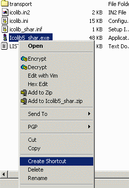

You can easily create a shortcut to Icon Library on your Windows
Desktop by following these simple instructions.
Right-click on the Icolib5_shar.exe file and select the
Create Shortcut menu to create a shortcut for Icon Library.

Drag the newly created shortcut to your Desktop.
You might also want to rename the shortcut so that the name is
not so long. You can right-click on the shortcut icon and select the
Rename menu option near the bottom of the list. Now you can type
a new name, such as Icon Library 5, as the new icon name.
You can start Icon Library by double-clicking on this shortcut icon.
You may also like to continue the installation by registering
the ICL file type to Icon Library. By doing this, you will be
able to start Icon Library by double-clicking on any ICL file
on your system. Click to Register
the ICL File Type.